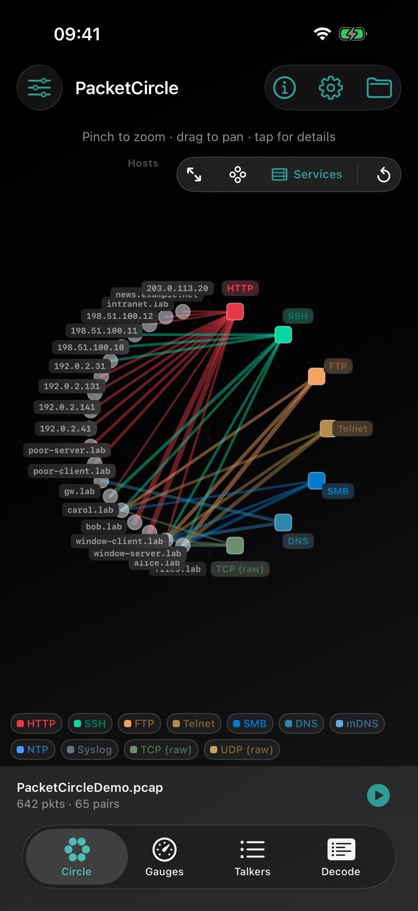
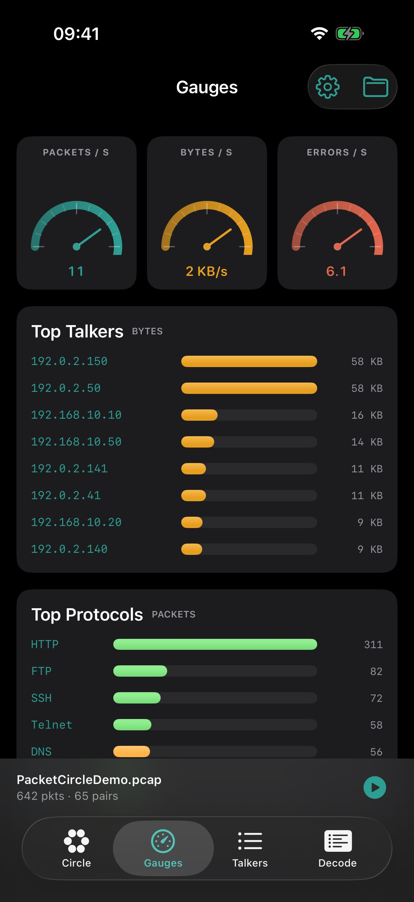
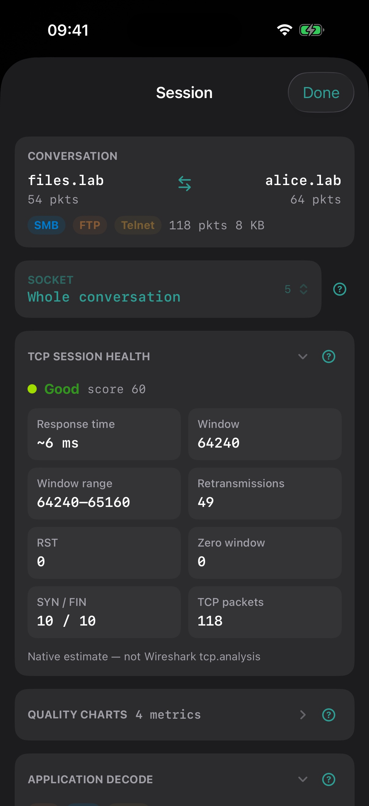
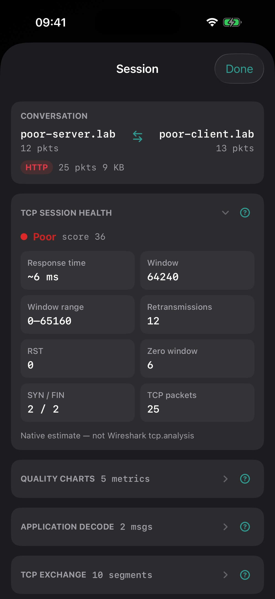
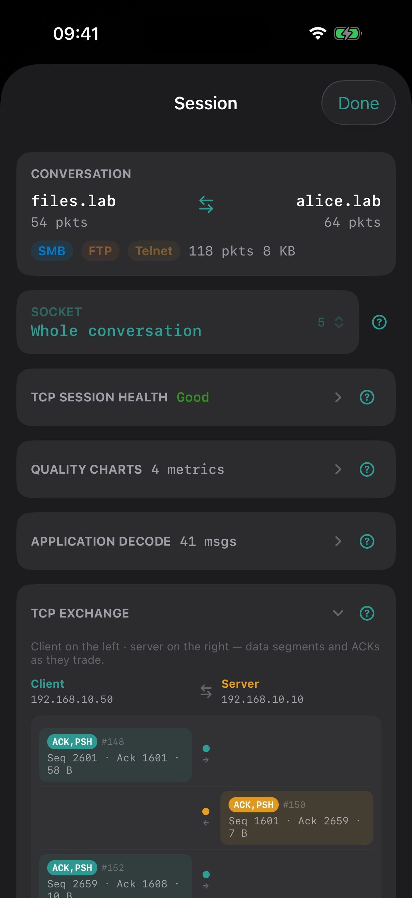
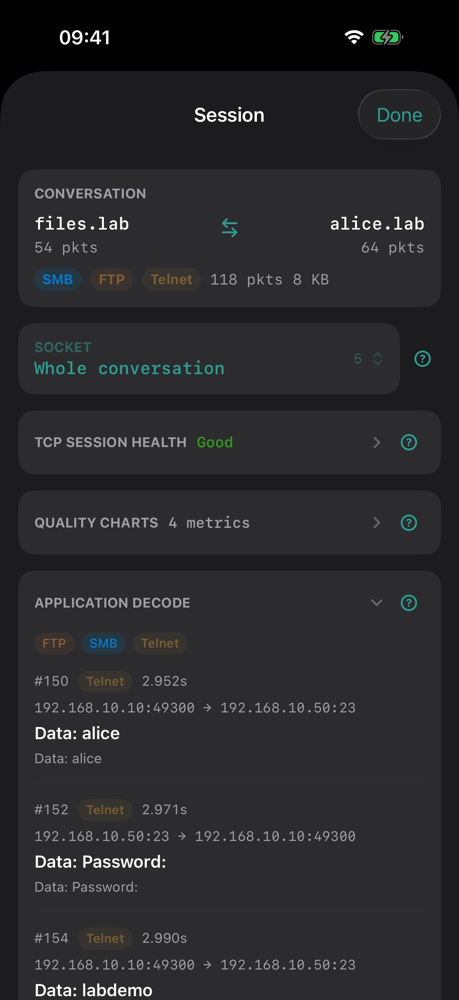
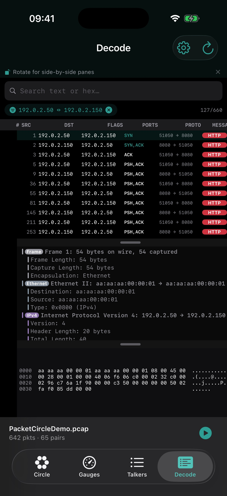

PacketCircle iOS: Detailed Usage
PacketCircle is built for conversation-first packet analysis: see who talks to whom, which services matter, where TCP health degrades, then drill into decode and payload — offline from PCAP / PCAPNG. See 1.1.0 notes for recent changes.
Screenshots
Hosts circle 
Services map 
Gauges 
Session overview 
TCP health 
TCP exchange 
Application decode Follow TCP Stream 
Decode
Analyst mental model
Topology — Circle (Hosts or Services): structureVolume & health — Gauges (degraded list + quality timeline) + edge coloringRanking — Talkers lists all pairs; Circle keeps Top‑N for drawingSession — health, RTT, window, retrans, TLS/ICMP cuesEvidence — Decode / Follow TCP Stream: frames and payload
Circle — two representations
Toggle Hosts / Services on the Circle tab.
Hosts mode
Visual Meaning Nodes on the ring Unique endpoints (IP or MAC) Edge Host↔host conversation Thickness Relative volume (packets or bytes) Color · Protocol Dominant / display protocol Color · Quality TCP session grade Legend chips Filter by protocol / related filters Top N Only the heaviest pairs are drawn
Use when: host communities, east–west chatter, single-host fan-out.
Services mode (bipartite)
Visual Meaning Left arc Hosts Right column Services (HTTP, SSH, FTP, Telnet, SMB, …) Edges Host → service only (no host↔host chords) Fan-in / fan-out Popular apps vs multi-role stations
Use when: service exposure, cleartext risk (Telnet/FTP), “who touched SMB?”
Tip: solo a legend chip before opening Session Details.
Gauges
Rate history, top talkers (bytes / packets), top protocols
Degraded Quality Conversations — Fair/Poor, worst first → SessionQuality timeline — tap → time slice → Talkers
Talkers
Ranked list of all analyzed pairs (Circle Top‑N is separate), with bi-directional summary, IP filter, optional time slice, and checkboxes.
When conversations are checked:
Copy Filter — Wireshark display filter (OR of pairs)Show in Decode — Decode scoped to the selectionSave PCAP — export only matching frames
Session Details
Conversation summary — bi-directional hosts; ports when a socket is selectedTCP Session Health — native 0–100 score + grade; RTT, window, retrans, RST/SYN/FINConversation vs Sockets (Options) — pair-aggregated vs port-specific healthTCP Exchange — client↔server ladder (paginated)Application / TLS / ICMP / infra peeks — protocol previews when presentFollow TCP Stream — Client red / Server blue; ASCII · Hex · Hex+ASCII; budget in Options
Decode
Capped frame list (Options: 500–10 000, default 5 000) with detail tree and hex. Scope from Session Details or Talkers multi-select.
Open / Demo / Replay
Open Capture — full offline analyze into aggregatesDemo Mode — timed teaching loop; Stop finishes into a normal analyzeReplay — status bar; original inter-frame timing
Options
TCP health focus (Conversation / Sockets)
Quality thresholds (Lenient / Balanced / Strict) — grade bands only
Show host names (shortened DNS / mDNS / NetBIOS)
Follow TCP Stream budget (64–2048 KB)
Decode frame limit
Guided tour — Circle → Session → Gauges; Finish leaves a clean Circle
Circle menu also: IP vs MAC, Packets vs Bytes, Top N, Protocol vs Quality coloring.
Suggested workflows
“What is this capture about?”
Gauges for top protocols / talkers / degraded list
Circle · Services for app exposure
Legend filter if noisy
“Find the sick TCP session”
Color · Quality on Circle, or Gauges → Degraded Quality Conversations
Open Fair/Poor → Session Details
Sockets focus if many ports share a pair
Optional: quality timeline → time slice → Talkers
Follow Stream or Decode for evidence
“Export interesting talkers”
Talkers → check ranked rows (full list)
Save PCAP and/or Copy Filter
Quickstart · 1.1.0 notes · Limitations